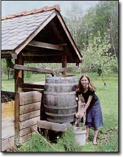
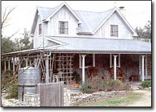
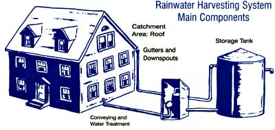
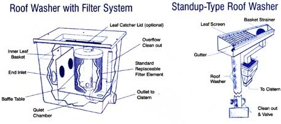
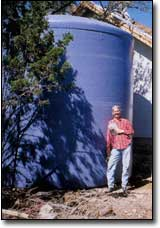

Rainwater harvesting systems can be as simple as directing gutters to a lidded garbage can or as complex as a concrete cistern, roof washer and filtration system. But whatever your application, rest assured that you'll be getting some of the purest - and cheapest - water around.
Rainwater can be used for potable water (drinking, cooking, bathing) or nonpotable uses such as landscape irrigation, livestock watering and washing. Collecting and using rainwater has numerous benefits, ranging from improved water quality to reduced stress on underground aquifers.
"All water is rainwater," rainwater systems enthusiast and author Richard Heinichen is fond of saying. And indeed, he's right: All our water, whether sucked from an aquifer, river or well, or harvested from a rooftop, once was cloud-borne.
But after it falls from the sky, rainwater percolates through the earth and rocks, where it picks up minerals and salts. As Heinichen points out, in many cases, this water also collects other contaminants such as industrial chemicals, pesticides and fecal coliform bacteria found in the soil. Captured before it hits the ground, rainwater is free of many pollutants that plague surface and underground water supplies and, according to the Texas Water Development Board, "almost always exceeds [the quality] of ground or surface water."
Rainwater typically has very low hardness levels, which reduces the use of soaps and detergents, and eliminates the need for a water softener. Fewer minerals also saves wear and tear on your plumbing fixtures.
Stored rainwater also is a good standby in times of emergencies such as power outages or during periods of extreme drought when wells dry up. In some areas where water supplies may not be available or dependable (or may be prohibitively expensive), collected rainwater is sometimes the least expensive option and can easily be less expensive than bottled water. Rainwater harvesting reduces the impact on aquifers, lessening the demand on ecologically sensitive or threatened aquifers. Collecting some of the rainwater falling on impervious surfaces also minimizes erosion and flooding: On some lots, as much as 50 percent of the land area is covered by roof surface.
Because it doesn't have to be treated, pumped or distributed through a complex network, harvested rainwater saves energy and the use of chemicals. Some municipal water users sometimes switch to harvested rainwater as a way to avoid chlorination and fluoridation treatments.
Rain barrels, the simplest rainwater collection devices, can save thousands of gallons of tap water each year, and save money and energy, too. (Lawn and garden watering typically consume 40 percent of total household water use in the summer.) Your plants also will love the warm, soft, chlorine-free rainwater.
Ready-made rain barrels, most commonly made from UV-protected plastic and fitted with lids and screens, are available in capacities ranging from 50 to 65 gallons. With a spigot and carefully fit top and screen, wooden wine barrels and recycled food-grade plastic barrels also can be made into water catchment devices. Maryland's Green Building Program Web site provides step-by-step plans on making your own rain barrel with a recycled barrel, a vinyl hose, PVC couplings and a screen grate.
The best barrels are made of an opaque material (metal, wood or colored plastic) to prevent light transmission and inhibit algae and bacterial growth. To stop barrels from becoming mosquito breeding grounds, fasten a tight-fitting top to them, and screen the ends of downspouts leading into the barrels. As an added measure of protection, add mosquito dunks (which release Bacillus thuringiensis var. israelensis, a biological agent toxic to mosquito larvae) to your barrels (but make sure to label barrels "Not Potable Water"). Tahoma, Washington, resident Dan Borba, who has been harvesting rainwater since 1999, adds a tablespoon of vegetable oil to his barrels' stored rainwater. The oil, he says, coats the water's surface and kills larvae by depriving them of oxygen.
For rainwater harvesting systems to be practical as the sole household water source, average annual rainfall of at least 24 inches is recommended, says Gail Vittori of the Center for Maximum Potential Building Systems in Austin, Texas. The entire eastern half of the United States, from the southern tip of Texas to northwestern Minnesota, meets this requirement, as does much of California, western Oregon and Washington, significant pockets throughout the Rocky Mountains and even areas in Arizona.
If you just want a system to offset your water use, a small system usually can be designed for a few thousand dollars. Sole and Maitri Ersson of Portland, Oregon, installed their 1,500-gallon rainwater system, which includes a plastic cistern, well pump, roof washer and UV sterilizer, for less than $1,500. A state-of-the-art rainwater harvesting system (adequately sized for a typical family and with sophisticated filtering and purification components) can cost $15,000 to $20,000.
The cost of your system depends on whether you have an appropriate roof surface or have to replace your roof, how big and what kind of cistern you choose, and what level of filtration and purity you require.
The average American uses about 100 gallons of water per day for showers, toilet flushing, clothes washing, cooking and lawn watering. By simply switching to low flush, 1.6-gallon toilets, low-flow showerheads and faucets, horizontal-axis washers and other water-saving appliances, you may be able to reduce your water use by half or more. Conserving water means that you will need less storage capacity, making it possible to buy a smaller (and more inexpensive) cistern. Similarly, if you live in an area that receives a steady supply of rainfall throughout the year, you may only need to size your cistern for a few weeks' worth of water.
But if you're in an area that experiences frequent drought conditions, or in an area with sporadic rainfall and a decidedly dry season, plan accordingly. Experts recommend planning for half your region's expected rainfall, while projecting twice as much water use.
First, calculate your water usage. For residential systems, this includes toilet flushing, bathing, clothes washing, dishwashing and outdoor watering. With water-conserving plumbing fixtures and little or no outside watering, per-person usage can range from 55 to 75 gallons per day. If you're already connected to municipal water, study your monthly water bills to get your average household usage.
Next, determine rainwater availability in your area. A quick estimate of rainwater collection can be made based on your region's annual rainfall, but more thorough calculations will examine average, minimum and maximum rainfall on a per month basis. This information should be available from the National Weather Service or a local meteorological station. In areas with less than 24 inches of rainfall per year, building a large enough collection area and cistern to provide adequate water may not be feasible.
Actual collection calculations are made based on the available roof area (the projected horizontal area of the roof surface used for collection) and an "efficiency coefficient," which accounts for the fact that not all the rainwater falling on the roof gets into the cistern. (See "Calculating Catchment Capability," below.)
Size the cistern to provide enough water storage for reasonably expected dry periods. The Texas Guide to Rainwater Harvesting includes detailed information on carrying out all of these calculations, including an advanced method that factors in storage capacity.
The most common rainwater catchment system is a roof. Typically, this is the roof of the building where the water will be used, though it may be a separate building designed expressly for rainwater harvesting (a "water barn"). Nearly all types of roofs have been - and are being - used for rainwater collection, but some are better than others.
The best roofing material for rainwater catchment is uncoated stainless steel or factory-enameled galvanized steel with a baked-enamel, certified lead-free finish. With any metal coating, ask the manufacturer whether the coating contains heavy metals (red paint used on metal often contained lead in the past). Any existing metal roof being used for a potable water catchment system should be tested for lead.
Wood shakes, concrete or clay tiles, and asphalt shingles are more likely than other materials to support the growth of mold, algae, bacteria and moss, which can potentially contaminate water supplies. Treated wood shingles may leach toxic preservatives, and asphalt shingles may leach small amounts of petroleum compounds. In addition to the health concerns, a porous or rough roof surface holds back some of the water that would otherwise make it into the cistern. Asphalt roofing has a "collection efficiency" of about 85 percent while enameled steel has a collection efficiency of more than 95 percent. With asphalt roofing, more of the rainwater stays on the roof in a typical rainstorm (i.e., the roof stays wet), though the actual percentage will depend on the duration of the storm.
To be most effective, the roof should be fully exposed and away from overhanging tree branches. This reduces the risk of contamination from rotting leaves or droppings from birds and insects in the trees. If possible, avoid using roofs of buildings that rely on wood heat, as the smoke particles and soot deposited on the roof may contain polynuclear aromatic hydrocarbons and other hazardous materials.
Between rainstorms, various pollutants can settle out of the air and onto your roof. Many rainwater harvesting systems incorporate a roof washer to keep these contaminants from entering the cistern. Roof washers capture and discard the first several gallons of rainwater during a storm before conveying the rest to the cistern. A very simple roof-wash system can be made out of a 6- or 8-inch vertical PVC or polyethylene pipe installed beneath the gutter, with an inlet just above each downspout to the cistern. Commercial roof washers range in price from $100 for a water diverter (available by mail order only from SafeRain, an Australian company) to $600 for a separate roof washer.
The cistern is the single largest investment for most rainwater harvesting systems. A cistern can range from a recycled whiskey barrel under the eaves of a house (suitable for watering plants) to a large aboveground or buried tank that will hold 30,000 gallons or more. Cisterns are constructed out of a wide range of materials.
Most cisterns are cylindrical for optimal strength-to-weight ratios. A cistern with a 10,000 gallon capacity (a reasonable minimum for a family of four depending solely on rainwater) might be 12 feet in diameter and 12 feet deep, for example. No matter what the material, most experts recommend keeping the tank tightly closed to prevent evaporation and to keep out sunlight (which will support algae growth) and animals (insects, rodents and amphibians). Cisterns often are designed with settling compartments that keep sediment from mixing with the water. The cistern also needs an overflow pipe for additional rain that falls after the cistern is full. If the rainwater harvesting system is the only water source, it makes sense to locate the cistern so that it can be filled by a water tank truck if necessary.
In cold climates, protect the cistern from freezing by burying it underground or incorporating it into a basement. In northern climates where rainwater is the sole water source, it may be necessary to oversize the cistern to provide carry-over during a significant portion of the winter when snow falls instead of rain.
Rainwater falling on the roof can be captured and conveyed to the cistern via gutters and downspouts constructed of roll-formed aluminum, galvanized steel, PVC (vinyl) or copper. As with the roofing, make sure that lead-based solder was not used in gutter or downspout connections. Downspouts should be designed to handle 1 1/4 inches of rain in a 10-minute period. Depending on the cistern location, 4-inch PVC or polyethylene piping may be used to convey water around the building to the cistern. A continuous 1/4-inch mesh screening and basket strainers at the downspouts help catch leaves and other debris. Gretchen Rupp, director of the Montana Water Center at Montana State University, recommends providing a downspout for each 50 feet of gutter run.
If the rainwater collection and storage system is located uphill from where the water will be used, gravity-flow conveyance might be possible, but the verti cal distance between storage and use is rarely enough to achieve adequate pressure for modern household plumbing. For most rainwater harvesting systems, a pump and pressure tank are required for water delivery. Richard Heinichen uses a Grundfos MQ on-demand pump, eliminating the need for a pressure tank.
Preliminary filtration and a roof-wash system provide the first line of defense against contamination. Rainwater harvesting systems supplying potable water also should include measures to treat water before use. Several treatment options, including microfiltration, UV sterilization and ozonation, are available. Many experts agree that filtration and UV treatment provide adequate protection, making ozonation unnecessary.
Most systems use a combination of physical filters, which remove particulates, and a UV-light chamber, which kills bacteria and other organisms by exposing them to high-energy ultraviolet light.
Water treatment systems can add significantly to the initial cost as well as operating costs of a rainwater system. A UV sterilization system costs from $300 to $1,000 or more. Because the lamp generating the UV light needs to be left on all the time, annual electricity consumption can be significant. An ozonation system can cost more than $1,200 and can consume as much as 6,000 kilowatt-hours per year (primarily to operate a circulating pump that mixes the ozone in the cistern 12 hours per day).
A less expensive option is to treat water with chlorine or iodine, as is typically done with municipal water. The most common chemical added is chlorine in the form of sodium hypochlorite, which is available in liquid form. Household bleach, which is 5 percent sodium hypochlorite, is commonly used. The downsides to chlorination are the taste of the treated water and health concerns about harmful chemicals that could result from the added chlorine. In the presence of organic matter, chlorinated hydrocarbons, which are suspected carcinogens, may be formed.
"The privilege of [water] independence comes with responsibility," says Heinichen. "You are the sanitation engineer, the maintenance mechanic, the troubleshooting technician. You can't point the finger at some hapless bureaucrat if you let your pipes freeze or you forget to change your filters or you don't keep your gutters clean or can't learn to conserve during dry spells."
To keep a rainwater harvesting system functioning properly, periodic maintenance is required - this is particularly important with systems used for potable water. Gutters and downspouts need to be kept free of leaves and other detritus. Roof-wash water may need draining after each storm. The cistern may need periodic cleaning or repairs if cracks or leaks develop. Filters and LTV lamps need to be replaced on a regular schedule. Pumps and ozonation systems may need occasional servicing. All piping and connections should be inspected periodically. Finally, occasional testing should be considered to ensure that suitable water quality is being achieved.
Environmental Building News, in Brattleboro, Vermont, publishes information on environmentally responsible design and construction.
BOOKS
Rainwater Collection for the Mechanically Challenged
By Suzy Banks and Richard Heinichen
Texas Guide to Rainwater Harvesting
ORGANIZATIONS
American Rainwater Catchment Systems Association
Center for Maximum Potential Building Systems
National Small Flows Clearinghouse
ROOF WASHERS
Rainwater System, Inc.
Tank Town
RAIN BARRELS
Maryland Green Building Program (instructions for converting a barrel)
Country Home Products
Yardiac
Spruce Creek Company
Clean Air Gardening
Planet Natural
Rainbarrels and More
Abundant Earth
Galvanized steel is probably the most common cistern material. Off-the-shelf farm tanks are available up to about 3,000 gallons. Because most farm tanks are not approved for potable water, some rainwater catchment system designers recommend coating the inside with an American Water Works Association-approved epoxy-based sealer. Larger, custom, steel tanks can be manufactured with galvanizing that is FDA approved for potable water.,
Concrete tanks are generally site-built using forms, though smaller pre-cast tanks are available. High-strength concrete (7,000 psi) is recommended for watertightness. Such a tank can be integrated into the basement, with the tank sides serving as the foundation walls. Tanks inside a building may serve a secondary function as thermal storage.
Ferrocement tanks are made by spraying or plastering a cement mortar over a wire mesh form. Wall thicknesses as thin as an inch can be produced, depending on the materials and the skill of the contractor. Because cracks can develop, some maintenance and repairs can be expected. Ferrocement is potentially one of the least expensive cistern materials. Mortared stone was traditionally used in some areas for cisterns. Construction cost is high, but resulting cisterns can be highly attractive. Fiberglass tanks are available with FDA approval for potable water. They are relatively inexpensive, lightweight and available in large sizes (up to about 10,000 gallons).
Polyethylene tanks are available with FDA approval for potable water in sizes up to several thousand gallons. They are lightweight, easily moved, and can be used above or below ground (tanks designed for burial may be more expensive). Durable wood, such as redwood or cypress, also can be used for tanks. If properly built, such tanks are highly durable - often lasting 50 years or longer. Salvaged wood such as old wine vats and whiskey-aging casks may be available.
A polyethylene liner over a non-watertight frame usually provides the lowest-cost cistern option, though it also is the least permanent. Liners for cisterns should be 20 or 30 mils thick and made of a UV-stabilized, FDA approved material.
If you're using a roof to harvest rain, the size of your catchment area is the square footage of the building's footprint. Each square foot of collection area should yield 0.6 gallons of water per inch of rainfall, although some water will be lost to evaporation and leakage, which is factored in by an efficiency factor of 0.8.
To determine your roof's water-harvesting potential:
1. Multiply the square feet of collection area by 0.6 gallons (per square foot of area).
2. Take this total times 0.8 (the efficiency factor).
3. Multiply the total from Step 2 by your area's annual average rainfall (in inches). You can find the average precipitation in your area by visiting the National Oceanic and Atmospheric Administration. This data chart gives monthly and yearly averages of data collected for specific cities during the past 30 years.
For our sample calculation, we used Austin, Texas, which receives an annual average rainfall of 32 inches. From 2,500 square feet of collection area, about 38,400 gallons of water per year, or 105 gallons per day, can be harvested.
To more accurately determine how much storage capacity you need and what kind of demand your system can withstand, a monthly balance calculation is necessary. The Texas Guide to Rainwater Harvesting gives step-by-step instructions on figuring this calculation.
|
 JOSEPH JENKINS Rainwater systems can be as simple as routing gutters to an old oak barrel, like Phoebe Jenkins and her family of Barkeyville, Pennsylvania, use. |
 RICHARD HEINICHEN Small whole-house rainwater systems use larger tanks to store water. |
 TEXAS WATER DEVELOPMENT BOARD Size the cistern to provide enough water storage for reasonably expected dry periods. |
|
 TEXAS WATER DEVELOPMENT BOARD |
 RICHARD HEINICHEN |
|